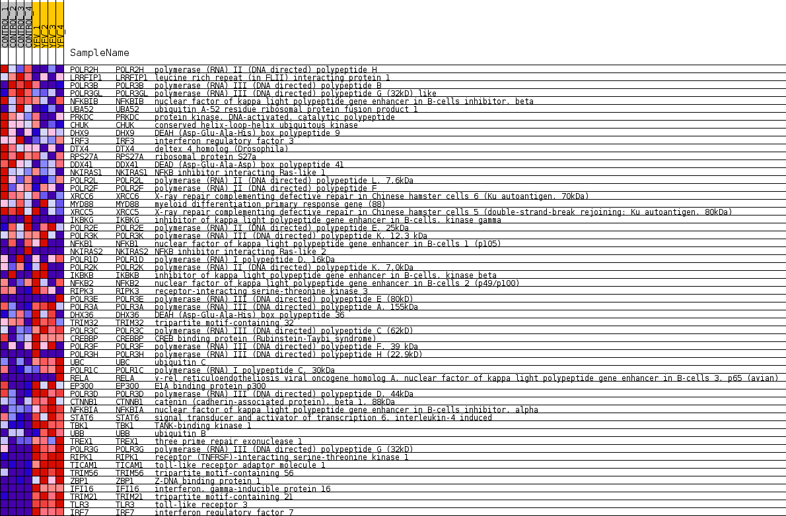
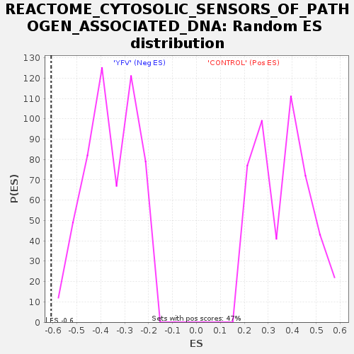

Profile of the Running ES Score & Positions of GeneSet Members on the Rank Ordered List
| Dataset | MATRIZ_GSE99081_collapsed_to_symbols.gsea_CLASE_99081.cls#CONTROL_versus_YFV |
| Phenotype | gsea_CLASE_99081.cls#CONTROL_versus_YFV |
| Upregulated in class | YFV |
| GeneSet | REACTOME_CYTOSOLIC_SENSORS_OF_PATHOGEN_ASSOCIATED_DNA |
| Enrichment Score (ES) | -0.6071032 |
| Normalized Enrichment Score (NES) | -1.7126887 |
| Nominal p-value | 0.0 |
| FDR q-value | 0.03086426 |
| FWER p-Value | 0.416 |
| SYMBOL | TITLE | RANK IN GENE LIST | RANK METRIC SCORE | RUNNING ES | CORE ENRICHMENT | |
|---|---|---|---|---|---|---|
| 1 | POLR2H | polymerase (RNA) II (DNA directed) polypeptide H | 227 | 1.024 | 0.0134 | No |
| 2 | LRRFIP1 | leucine rich repeat (in FLII) interacting protein 1 | 857 | 0.686 | -0.0071 | No |
| 3 | POLR3B | polymerase (RNA) III (DNA directed) polypeptide B | 950 | 0.659 | 0.0048 | No |
| 4 | POLR3GL | polymerase (RNA) III (DNA directed) polypeptide G (32kD) like | 1544 | 0.521 | -0.0179 | No |
| 5 | NFKBIB | nuclear factor of kappa light polypeptide gene enhancer in B-cells inhibitor, beta | 1637 | 0.504 | -0.0101 | No |
| 6 | UBA52 | ubiquitin A-52 residue ribosomal protein fusion product 1 | 1969 | 0.488 | -0.0174 | No |
| 7 | PRKDC | protein kinase, DNA-activated, catalytic polypeptide | 2505 | 0.412 | -0.0395 | No |
| 8 | CHUK | conserved helix-loop-helix ubiquitous kinase | 2761 | 0.373 | -0.0452 | No |
| 9 | DHX9 | DEAH (Asp-Glu-Ala-His) box polypeptide 9 | 3102 | 0.332 | -0.0574 | No |
| 10 | IRF3 | interferon regulatory factor 3 | 3858 | 0.253 | -0.0972 | No |
| 11 | DTX4 | deltex 4 homolog (Drosophila) | 3993 | 0.243 | -0.0990 | No |
| 12 | RPS27A | ribosomal protein S27a | 4134 | 0.232 | -0.1014 | No |
| 13 | DDX41 | DEAD (Asp-Glu-Ala-Asp) box polypeptide 41 | 4246 | 0.224 | -0.1023 | No |
| 14 | NKIRAS1 | NFKB inhibitor interacting Ras-like 1 | 4288 | 0.221 | -0.0989 | No |
| 15 | POLR2L | polymerase (RNA) II (DNA directed) polypeptide L, 7.6kDa | 4420 | 0.210 | -0.1014 | No |
| 16 | POLR2F | polymerase (RNA) II (DNA directed) polypeptide F | 4989 | 0.159 | -0.1322 | No |
| 17 | XRCC6 | X-ray repair complementing defective repair in Chinese hamster cells 6 (Ku autoantigen, 70kDa) | 5118 | 0.147 | -0.1362 | No |
| 18 | MYD88 | myeloid differentiation primary response gene (88) | 5233 | 0.135 | -0.1396 | No |
| 19 | XRCC5 | X-ray repair complementing defective repair in Chinese hamster cells 5 (double-strand-break rejoining; Ku autoantigen, 80kDa) | 5583 | 0.107 | -0.1583 | No |
| 20 | IKBKG | inhibitor of kappa light polypeptide gene enhancer in B-cells, kinase gamma | 5852 | 0.088 | -0.1725 | No |
| 21 | POLR2E | polymerase (RNA) II (DNA directed) polypeptide E, 25kDa | 6097 | 0.068 | -0.1858 | No |
| 22 | POLR3K | polymerase (RNA) III (DNA directed) polypeptide K, 12.3 kDa | 6754 | 0.023 | -0.2257 | No |
| 23 | NFKB1 | nuclear factor of kappa light polypeptide gene enhancer in B-cells 1 (p105) | 6780 | 0.022 | -0.2267 | No |
| 24 | NKIRAS2 | NFKB inhibitor interacting Ras-like 2 | 7336 | 0.000 | -0.2610 | No |
| 25 | POLR1D | polymerase (RNA) I polypeptide D, 16kDa | 9859 | -0.020 | -0.4163 | No |
| 26 | POLR2K | polymerase (RNA) II (DNA directed) polypeptide K, 7.0kDa | 10029 | -0.027 | -0.4260 | No |
| 27 | IKBKB | inhibitor of kappa light polypeptide gene enhancer in B-cells, kinase beta | 12590 | -0.253 | -0.5774 | No |
| 28 | NFKB2 | nuclear factor of kappa light polypeptide gene enhancer in B-cells 2 (p49/p100) | 12951 | -0.294 | -0.5918 | No |
| 29 | RIPK3 | receptor-interacting serine-threonine kinase 3 | 12963 | -0.295 | -0.5845 | No |
| 30 | POLR3E | polymerase (RNA) III (DNA directed) polypeptide E (80kD) | 13329 | -0.342 | -0.5980 | Yes |
| 31 | POLR3A | polymerase (RNA) III (DNA directed) polypeptide A, 155kDa | 13404 | -0.352 | -0.5931 | Yes |
| 32 | DHX36 | DEAH (Asp-Glu-Ala-His) box polypeptide 36 | 13519 | -0.367 | -0.5903 | Yes |
| 33 | TRIM32 | tripartite motif-containing 32 | 13625 | -0.383 | -0.5865 | Yes |
| 34 | POLR3C | polymerase (RNA) III (DNA directed) polypeptide C (62kD) | 13843 | -0.417 | -0.5888 | Yes |
| 35 | CREBBP | CREB binding protein (Rubinstein-Taybi syndrome) | 14125 | -0.467 | -0.5936 | Yes |
| 36 | POLR3F | polymerase (RNA) III (DNA directed) polypeptide F, 39 kDa | 14170 | -0.477 | -0.5836 | Yes |
| 37 | POLR3H | polymerase (RNA) III (DNA directed) polypeptide H (22.9kD) | 14173 | -0.478 | -0.5709 | Yes |
| 38 | UBC | ubiquitin C | 14182 | -0.479 | -0.5586 | Yes |
| 39 | POLR1C | polymerase (RNA) I polypeptide C, 30kDa | 14200 | -0.482 | -0.5467 | Yes |
| 40 | RELA | v-rel reticuloendotheliosis viral oncogene homolog A, nuclear factor of kappa light polypeptide gene enhancer in B-cells 3, p65 (avian) | 14524 | -0.501 | -0.5533 | Yes |
| 41 | EP300 | E1A binding protein p300 | 14599 | -0.516 | -0.5440 | Yes |
| 42 | POLR3D | polymerase (RNA) III (DNA directed) polypeptide D, 44kDa | 14973 | -0.615 | -0.5506 | Yes |
| 43 | CTNNB1 | catenin (cadherin-associated protein), beta 1, 88kDa | 15058 | -0.642 | -0.5386 | Yes |
| 44 | NFKBIA | nuclear factor of kappa light polypeptide gene enhancer in B-cells inhibitor, alpha | 15212 | -0.696 | -0.5294 | Yes |
| 45 | STAT6 | signal transducer and activator of transcription 6, interleukin-4 induced | 15218 | -0.698 | -0.5110 | Yes |
| 46 | TBK1 | TANK-binding kinase 1 | 15405 | -0.788 | -0.5014 | Yes |
| 47 | UBB | ubiquitin B | 15642 | -0.918 | -0.4914 | Yes |
| 48 | TREX1 | three prime repair exonuclease 1 | 15760 | -1.051 | -0.4705 | Yes |
| 49 | POLR3G | polymerase (RNA) III (DNA directed) polypeptide G (32kD) | 15821 | -1.156 | -0.4432 | Yes |
| 50 | RIPK1 | receptor (TNFRSF)-interacting serine-threonine kinase 1 | 15848 | -1.206 | -0.4125 | Yes |
| 51 | TICAM1 | toll-like receptor adaptor molecule 1 | 15895 | -1.280 | -0.3811 | Yes |
| 52 | TRIM56 | tripartite motif-containing 56 | 15987 | -1.547 | -0.3453 | Yes |
| 53 | ZBP1 | Z-DNA binding protein 1 | 15989 | -1.552 | -0.3037 | Yes |
| 54 | IFI16 | interferon, gamma-inducible protein 16 | 16119 | -2.374 | -0.2481 | Yes |
| 55 | TRIM21 | tripartite motif-containing 21 | 16147 | -2.674 | -0.1782 | Yes |
| 56 | TLR3 | toll-like receptor 3 | 16176 | -3.070 | -0.0977 | Yes |
| 57 | IRF7 | interferon regulatory factor 7 | 16202 | -3.791 | 0.0023 | Yes |

